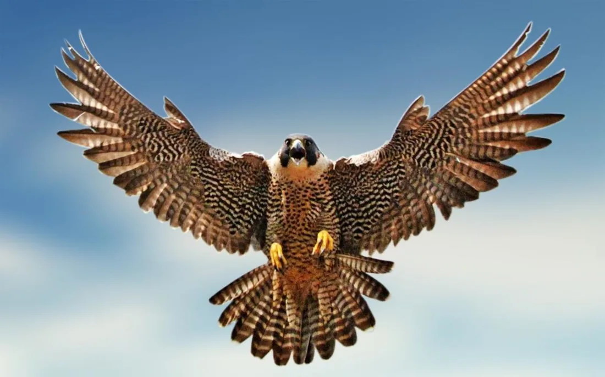
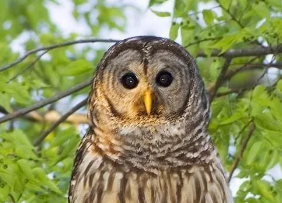
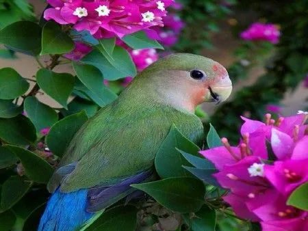
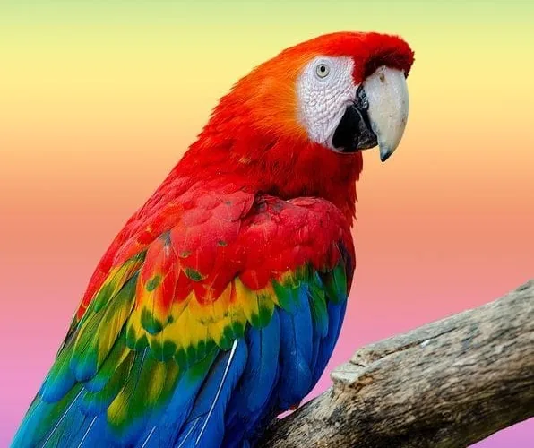
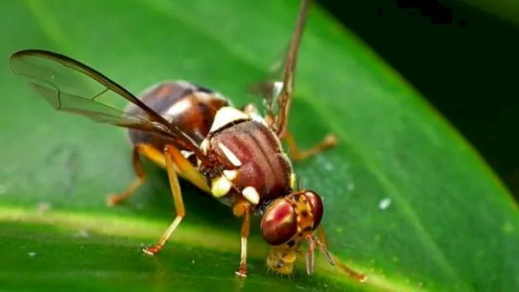
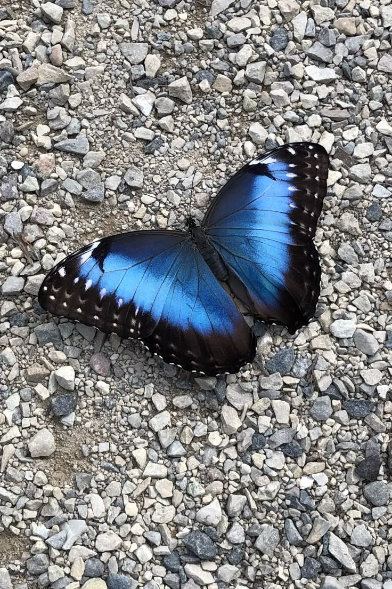
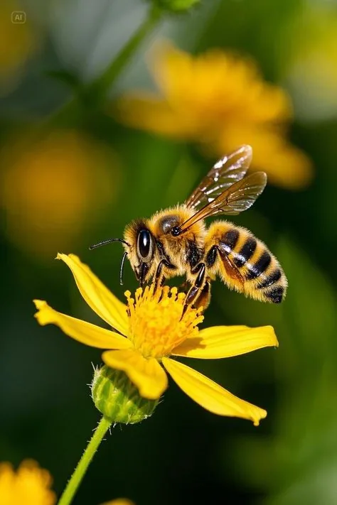
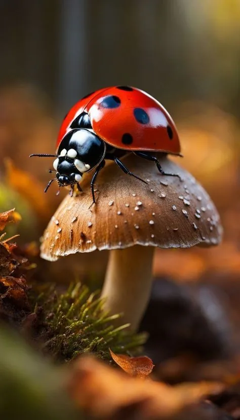
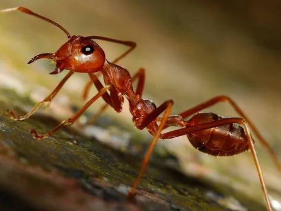
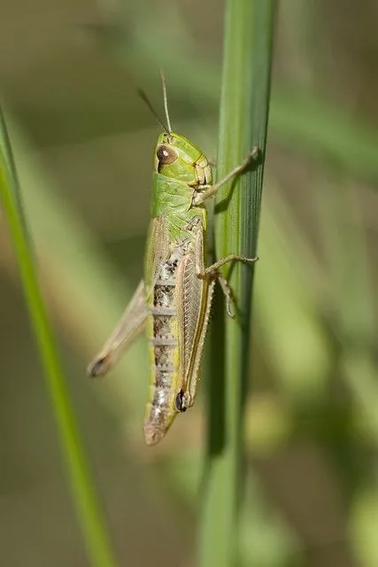

Mammals
Kangaroo
Macropus
Strong back legs and a sturdy tail make kangaroos built for hopping, grazing and getting away from danger.
Welcome to the animal kingdom. Pick a family, or search for any animal.

7 animals
Mammals have hair or fur and are warm-blooded.

5 animals
Birds have feathers, wings and beaks, and no teeth.

4 animals
Fish are aquatic vertebrates, from bony fish to sharks and rays.

6 animals
Insects have six legs and a body in three parts: head, thorax and abdomen.

6 animals
Arachnids are eight-legged arthropods with two body sections and no antennae.

4 animals
Mollusks have soft bodies, and some have a shell for protection.

6 animals
Reptiles are cold-blooded animals covered in scales.
Search by name, habitat or diet, or filter by family.
Mammals
Macropus
Strong back legs and a sturdy tail make kangaroos built for hopping, grazing and getting away from danger.

Mammals
Ornithorhynchus anatinus
A mammal that lays eggs. The male has a sharp spur on each back heel that delivers venom.

Mammals
Panthera leo
Lions are the only big cats that live in groups. A group, called a pride, can have up to about 30 lions depending on the food and water available.

Mammals
Equus quagga
The black-and-white stripes help zebras recognise each other, and they may also confuse biting flies and predators.

Mammals
Giraffa
Giraffes can sprint at about 55 km/h over short distances, or cruise at about 16 km/h over longer ones.

Mammals
Cetacea
Whales are social, air-breathing mammals. They give birth to live young and feed their babies with their own milk.

Mammals
Chiroptera
Bats are the only mammals that can truly fly. Many use echolocation, calling out and listening to the echoes, to find their way at night.
Birds
Haliaeetus leucocephalus
A powerful bird of prey known for its strength and very sharp eyesight. It often snatches fish from the surface of the water.

Birds
Falco
A fast, powerful bird of prey known for its speed and hunting skill.

Birds
Strigiformes
A mostly nocturnal bird known for seeing in the dark and for its deep "hoo" call.

Birds
Agapornis
A small, colourful bird that sings and chirps. Lovebirds are named for the close bond between mates.

Birds
Psittaciformes
A colourful, intelligent bird that can mimic human speech and other sounds.
Fish
Amphiprioninae
Clownfish live safely among the stinging tentacles of sea anemones on coral reefs. This is the fish that inspired Nemo.
Fish
Selachimorpha
Sharks are fish with skeletons of cartilage, not bone. Most sharks are not dangerous to people, and many are very important to ocean health.
Fish
Tetraodontidae
When threatened, a pufferfish gulps water and swells into a ball. Many are poisonous if eaten.
Fish
Carassius auratus
A hardy freshwater fish kept as a pet for centuries. Goldfish can live for a decade or more with good care.

Insects
Musca domestica
A small insect with two wings that flies quickly. Flies often live near people and land on food and garbage.

Insects
Rhopalocera
A colourful insect with large wings. It goes through four life stages: egg, larva (caterpillar), pupa and adult.

Insects
Apis mellifera
A flying insect that collects nectar and makes honey. Bees also pollinate flowers and plants.

Insects
Coleoptera
A hard-bodied insect with two pairs of wings. Some beetles, like the ladybird, are helpful gardeners, while others damage crops.

Insects
Formicidae
A small insect that lives in colonies. Ants are strong for their size and work together in groups.

Insects
Schistocerca gregaria
A locust is a type of grasshopper that can form huge swarms and eat crops very quickly.

Arachnids
Theraphosidae
Large, hairy spiders found in tropical and subtropical regions. Some live in ground burrows and others live in trees.

Arachnids
Scorpiones
Scorpions have a segmented tail that curves over the back and ends in a venomous stinger, plus a pair of pincers.

Arachnids
Latrodectus
Black widows have glossy black bodies, often with a red or orange hourglass on the belly. They are known for their strong venom.

Arachnids
Androctonus australis
Known for its thick tail. Some species in this group have venom that is medically significant to humans.

Arachnids
Lycosidae
Active hunters known for speed and agility. They do not build webs to catch prey, and females carry their young on their backs.

Arachnids
Pandinus imperator
One of the largest scorpions, known for its size and dark colour. It is relatively docile and popular in the pet trade.

Mollusks
Gastropoda
Snails have a spiral shell and move slowly on one muscular foot.

Mollusks
Bivalvia
Clams have two shells hinged together and live buried in sand or mud.

Mollusks
Teuthida
Squids are fast swimmers with eight arms and two longer tentacles.

Mollusks
Octopoda
Octopuses are smart animals that can change colour to hide or to signal.

Reptiles
Crocodylidae
Crocodiles are powerful reptiles that have changed very little since the age of the dinosaurs.

Reptiles
Iguanidae
A large lizard with a row of spines along its back. Many iguanas spend their days basking in the sun.

Reptiles
Eublepharis macularius
A small, spotted lizard that hunts at night. It stores fat in its tail.

Reptiles
Sphenodon punctatus
A rare reptile found only in New Zealand. It looks like a lizard but belongs to its own ancient group.

Reptiles
Serpentes
Snakes are limbless reptiles with no eyelids or ears. They smell the air with their tongues.

Reptiles
Cheloniidae
A reptile that spends its life at sea. Females return to land only to lay eggs on sandy beaches.
Check the spelling, try a shorter word, or clear the filters.
Select a photo to view it larger.